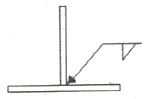
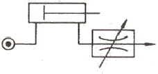
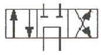

설비보전기능사 (2015-01-25 기출문제)
1과목: 기계보전 일반(대략구분)
1. 기계 윤활에서 윤활작용이 아닌 것은?
- 알파작용
- 감마작용
- 세정작용
- 응력분산작용
(정답률: 64%)

2. CM형 버니어 캘리퍼스에 대한 설명으로 옳지 않은 것은?
- 최소 측정 단위는 0.02㎜이다.
- 독일형 또는 모오젤형이라고 한다.
- 내측 측정이 가능하며 미동장치가 있다.
- 원척의 1눈금은 1㎜, 부척의 눈금은 12㎜를 25등분 한 것이다.
(정답률: 68%)
3. 공기압축기용 전자밸브 부하경감장치의 언로더 작동불량 원인으로 볼 수 없는 것은?
- 언로더 조작 압력이 낮다.
- 푸셔의 길이가 기준치보다 길다.
- 피스톤 또는 다이어프램에서 누설이 발생하고 있다.
- 솔레노이드 밸브에 유분, 먼지, 수분 등이 혼입되었다.
(정답률: 66%)
4. 감속기의 기어박스를 점검한 결과 이뿌리 면이 상대편 기어의 이끝 통로에 따라 마모되었다. 문제해결방법으로 옳지 않은 것은?
- 압력각을 증가시킨다.
- 기어의 이끝 면을 가공한다.
- 기어의 이끝 높이를 크게 한다.
- 피니언의 이뿌리 면을 가공한다.
(정답률: 63%)
5. 브레이크 드럼의 지름이 450mm, 브레이크 드럼에 작용하는 힘이 200kgf인 경우 드럼에 작용하는 토크는 얼마인가? (단, 마찰계수(μ)는 0.2이다.)
- 900kgf・mm
- 9000kgf・mm
- 900kgf・m
- 9000kgf・m
(정답률: 68%)
6. 유압펌프에서 기름이 토출하지 않을 때 점검할 사항이 아닌 것은?
- 펌프의 회전방향이 옳은지 검사한다.
- 석션스트레이너의 눈 간격을 확인한다.
- 규정된 점도의 기름이 있는지 확인한다.
- 릴리프밸브 자체의 고장여부를 점검한다.
(정답률: 51%)
7. 흡수식 공기건조기의 특징으로 옳지 않은 것은?
- 설치가 간단하다.
- 취급이 용이하다.
- 기계적 마모가 적다.
- 에너지 공급이 필요하다.
(정답률: 70%)
8. 축이 구부러졌을 때 교환하지 않고 정비현장에서 수리여부를 판단하여 수리를 진행할 수 있는 경우로 가장 거리가 먼 것은?
- 베어링 중간부의 풀리 스프라킷이 흔들려 소리를 낼 때
- 500rpm 이하이며 베어링 간격이 비교적 긴 축이 휘어져 있을 때
- 경하중 기계에서 축 흔들림 때문에 진동이나 베어링의 발열이 있을 때
- 감속기가 부착된 고속 회전축이나 단 달림부에서 급하게 휘어져 있을 때
(정답률: 56%)
9. 관용 평행나사는 다듬질 정도에 따라 몇 등급으로 구분하는가?
- 2등급
- 3등급
- 4등급
- 5등급
(정답률: 61%)
10. 강관보다 무겁고 약하지만 내식성이 강하고 값이 저렴하여 주로 매설관으로 많이 사용하는 것은?
- 강관
- 구리관
- 주철관
- 염화비닐관
(정답률: 75%)
11. 접착제의 구비조건으로 가장 거리가 먼 것은?
- 액체성일 것
- 중량이 클 것
- 고체 표면에 침투하여 모세관 작용을 할 것
- 도포 후 고체화하여 일정한 강도를 유지할 것
(정답률: 84%)
12. 기계제도에서 패킹, 박판 등 얇은 물체의 단면표시 방법은?
- 1개의 가는 실선으로 표시
- 1개의 굵은 실선으로 표시
- 1개의 굵은 파선으로 표시
- 1개의 가는 일점쇄선으로 표시
(정답률: 66%)
13. 로크너트에 관한 설명으로 옳지 않은 것은?
- 주로 풀림방지에 사용된다.
- 로크너트를 먼저 삽입하여 체결한다.
- 정규너트를 먼저 삽입하여 체결한다.
- 두께가 얇은 너트를 로크너트라 한다.
(정답률: 57%)
14. 길이가 긴 축의 구부러짐을 현장에서 수리하는 공구는?
- 짐 크로
- 스트레이트 에지
- 다이얼 게이지
- 스크루 익스트랙터
(정답률: 84%)
15. 대상물의 좌표면이 투상면에 평행인 직각 투상법은?
- 정투상법
- 축측투상법
- 사투상법
- 투시투상법
(정답률: 80%)
16. 밸브누설 방지를 위한 밸브의 각 부품 정비시 주의사항으로 옳지 않은 것은?
- 개스킷은 사용유체 및 사용온도 등을 고려하여 선정한다.
- 볼트 조임 시에는 적정한 조임을 위해 토크렌치를 사용한다.
- 밸브 디스크 및 시트 손상 시 래핑 방법으로 누설을 감소시킬 수 있다.
- 밸브 플랜지 볼트를 조일 때 개스킷의 적절한 눌림을 위해 볼트를 시계방향 순서로 조인다.
(정답률: 62%)
17. 그리스 윤활법과 오일 윤활법을 비교, 설명한 것으로 옳지 않은 것은?
- 이물질 여과는 오일 윤활방식이 쉽다.
- 냉각작용은 오일 윤활방식이 우수하다.
- 윤활제 교환은 그리스 윤활방법이 간단하다.
- 밀봉장치 및 하우징의 구조는 그리스 윤활방법이 간단하다.
(정답률: 55%)
18. 도면 중 다음과 같은 표기가 나타내는 의미는?

- 화살표 방향으로 필렛 용접을 한다.
- 화살표 방향으로 맞대기 용접을 한다.
- 화살표 반대방향으로 필렛 용접을 한다.
- 화살표 반대방향으로 맞대기 용접을 한다.
(정답률: 74%)
19. 핸들, 바퀴의 암, 리브, 축구조물 부재 등의 절단면을 나타내는 단면도는?
- 전단면도
- 회전단면도
- 반단면도
- 부분단면도
(정답률: 64%)
20. 나사의 제도법에 관한 설명으로 옳지 않은 것은?
- 나사의 방향표시는 왼쪽 나사에만 표시한다.
- 나사의 줄수표시는 두 줄 이상인 경우만 표시한다.
- 수나사와 암나사의 결합부분은 주로 수나사로 표시한다.
- 나사부의 해칭은 수나사는 내경, 암나사는 외경까지 해칭한다.
(정답률: 55%)
2과목: 설비관리(대략구분)
21. 기어구동에서 이가 상대측 이뿌리에 간섭을 일으켜 발열하고 윤활막 파괴로 금속접촉을 하는 것을 무엇이라고 하는가?
- 피칭
- 스포어링
- 스코어링
- 백래시(back lash)
(정답률: 52%)
22. 부품의 수명이 짧거나 설계 불량, 제작 불량 등에 의한 결점이 나타나는 고장 시기는?
- 초기 고장기
- 우발 고장기
- 돌발 고장기
- 노후 고장기
(정답률: 76%)
23. 윤활제의 급유방식 중 순환급유법이 아닌 것은?
- 유욕급유법
- 적하급유법
- 원심급유법
- 중력순환 급유법
(정답률: 75%)
24. 내륜 회전하는 베어링을 축이나 하우징에 조립할 때 일반적인 끼워 맞춤의 관계가 적당한 것은?
- 베어링 내륜과 축은 억지 끼워 맞춤 한다.
- 베어링 외륜과 축은 볼트로 끼워 맞춤 한다.
- 베어링 내륜과 축은 헐거운 끼워 맞춤 한다.
- 베어링 외륜과 하우징은 억지 끼워 맞춤 한다.
(정답률: 63%)
25. 특별한 문제나 상황의 원인을 탐구하고 규명하여 고장 원인을 해결하는 방법으로 일명 생선뼈 그림이라고도 하는 분석 방법은?
- 특성요인도(Cause and Effect Diagram)
- 파레토 차트(Pareto Chart)
- 관리도(Control Chart)
- 흐름 차트(Flow Chart)
(정답률: 60%)
26. 자주보전의 효과측정을 위한 방법이 아닌 것은?
- 평균가동시간(MTBF)의 연장
- OPL(one point lesson) 작성현황
- 자주보전 개선시트의 작성현황
- 수익성과의 연계추적
(정답률: 61%)
27. 횡측에 시간, 종축에 부하전력을 설정 및 표시한 도표를 무엇이라 하는가?
- 부하 곡선
- 조정전력 곡선
- 수요물 곡선
- 설비 이용률 곡선
(정답률: 71%)
28. TPM 보전방식의 특징으로 옳은 것은?
- 문제를 해결하려는 방법
- 상벌위주의 동기부여
- 상대적 벤치마크 달성
- 원인 추구 시스템
(정답률: 57%)
29. PM분석에 대한 설명 중 틀린 것은?
- 우발고장을 규명하고 개선하기 위하여 개발된 방법
- 특성요인도 분석의 단점을 보완할 수 있는 방법
- 어떤 사물을 분해하여 그것을 성립시키고 있는 성분 및 요소를 명확하게 하는 방법
- 고장 같은 불합리한 현상을 물리적으로 분석하는 방법
(정답률: 33%)
30. 완벽한 분해검사로서 설비의 효율을 높이기 위하여 관리하는데 중요한 활동인 오버홀(overhaul)은 어떤 보전활동에 속하는가?
- 일상보전활동
- 사후보전활동
- 예방보전활동
- 개량보전활동
(정답률: 54%)
3과목: 공유압 일반(대략구분)
31. 다음 중 유틸리티 설비에 해당되는 것은?
- 발전설비
- 운반장치
- 항만설비
- 육상하역설비
(정답률: 63%)
32. 설비효율을 저해하는 6대 로스에 해당하지 않는 것은?
- 고장로스
- 초기·수율로스
- 관리로스
- 속도로스
(정답률: 59%)
33. 고장유형과 발생빈도, 거시적 현상, 고장 확산속도 및 상대전 안전에 관한 설명 중 옳은 것은?
- 풀림에 변이는 거시적으로 관찰가능하고 급속도로 진행되며 덜 위험하다.
- 마모에 의한 표면변화는 거시적으로는 눈에 보이지 않으며 급속도로 진행되며 위험하다.
- 부식에 의한 자재변화는 거시적으로는 눈에 보이지 않으나 급속도로 진행되며 위험하다.
- 피로에 의한 파손은 거시적으로는 눈에 보이지 않으나 급속도로 진행되며 대단히 위험하다.
(정답률: 62%)
34. 설비 열화측정에서 성능 저하형 열화 설비의 검사방법은?
- 정밀검사
- 경향검사
- 정도검사
- 양부검사
(정답률: 51%)
35. 공구를 용도별로 분류할 때 프레스, 주・단조 등에 사용되는 공구는?
- 연삭 공구
- 절삭 공구
- 형(die)
- 치구 부착구
(정답률: 63%)
36. 계량단위 종류 중 면적, 체적, 속도는 어느 단위에 속하는가?
- 기본단위
- 유도단위
- 보조계량단위
- 특수단위
(정답률: 48%)
37. 설비가동률을 나타낸 것으로 가장 옳은 것은?
- (고장건수/부하시간)×100
- (가동시간/부하시간)×100
- (가동시간/고장횟수)×100
- (고장정지시간/부하시간)×100
(정답률: 64%)
38. 다음 중 설비 관리 목적이 아닌 것은?
- 생산 계획 달성
- 원가 상승
- 재해 예방
- 납기 준수
(정답률: 75%)
39. 설비의 종합효율을 구하는 요소가 아닌 것은?
- 설비 이용률
- 시간 가동률
- 성능 가동률
- 양품률
(정답률: 59%)
40. 공기탱크의 용량 결정 요소에 해당되지 않는 것은?
- 공기 소비량
- 압축기의 공급 체적
- 허용 가능한 압력강하
- 윤활기 내의 윤활유 공급량
(정답률: 69%)
41. 공압회로에서 압력제어밸브의 기능에 속하지 않는 것은?
- 적정한 공기압력을 사용하여 압축공기의 과다 소모를 방지한다.
- 공기압력의 유무를 화학적 신호를 이용하여 공기 흐름의 방향을 제어한다.
- 적정한 공기압력을 사용함에 따라 공압 기기의 인내성 및 신뢰성을 확보한다.
- 장치가 소정 이상의 공기 압력으로 될 때에 공기를 빼내어 안전을 확보한다.
(정답률: 62%)
42. 실린더가 전진 운동할 때 다음 그림은 어떠한 유압회로를 나타내는 것인가?

- 로킹(locking) 회로
- 미터 인(meter-in) 회로
- 미터 아웃(meter-out) 회로
- 블리드 오프(bleed-off) 회로
(정답률: 60%)
43. 실린더 중 양 방향의 운동에서 모두 일을 할 수 있는 것은?
- 램형 실린더
- 단동 실린더(피스톤식)
- 복동 실린더(피스톤식)
- 다이어프램 실린더(비피스톤식)
(정답률: 79%)
44. 유압회로 설계상 주의사항으로 가장 거리가 먼 것은?
- 유압회로는 가급적 간단해야 한다.
- 열을 방출하기 쉽도록 하여야 한다.
- 유압 유닛에서 발생하는 진동, 소음을 작게 하여야 한다.
- 작업자가 다양한 위치에서 일을 할 수 있도록 하여야 한다.
(정답률: 67%)
45. SI 단위계에서 압력의 단위는?
- atm
- bar
- Pa
- kgf/cm2
(정답률: 62%)
46. 공기 압축기를 작동원리에 따라 분류할 때 터보형 압축기에 속하는 것은?
- 원심식
- 스크루식
- 피스톤식
- 다이어프램식
(정답률: 46%)
47. 그림의 기호가 나타내는 것은?

- 3/2way 방향 제어 밸브
- 4/2way 방향 제어 밸브
- 4/3way 방향 제어 밸브
- 5/2way 방향 제어 밸브
(정답률: 68%)
48. 5포트 2위치 방향제어밸브의 연결구 표시 중 작업(동작)라인의 숫자 표시(ISO)규격은?
- 1,3
- 2,4
- 3,5
- 12,14
(정답률: 52%)
49. 유압 작동유의 점도를 나타내는 단위는?
- 토오크
- 디그리
- 리스크
- 포아즈
(정답률: 64%)
50. 유압실린더의 구성요소 중 유압작동유의 누설방지에 사용되는 것은?
- 실(Seal)
- 피스톤 로드
- 헤드커버
- 실린더 튜브
(정답률: 67%)
4과목: 산업안전(대략구분)
51. 수랭식 오일쿨러(oil coller)의 장점이 아닌 것은?
- 소음이 적다.
- 냉각수 설비가 필요 없다.
- 자동유로조정이 가능하다.
- 소형으로 냉각능력이 크다.
(정답률: 62%)
52. 토크에 대한 관성의 비가 크므로 응답성이 좋은 반면에, 저속에서는 토크출력 및 회전속도의 맥동이 커서 정밀한 서보기구에는 적합하지 않은 유압모터는?
- 기어 모터
- 액셜형 피스톤 모터
- 축 방향 피스톤 모터
- 레이디얼형 피스톤 모터
(정답률: 56%)
53. 흐름이 한 방향으로만 허용되는 일방향 제어 밸브의 명칭은?
- 체크 밸브
- 언로드 밸브
- 니들 밸브
- 유량 분류 밸브
(정답률: 81%)
54. 밀링작업시 유의사항으로 옳지 않은 것은?
- 장갑을 끼고 작업하지 않도록 한다.
- 기계를 정지하고 공작물을 측정한다.
- 절삭된 칩(chip)은 솔로 제거하여야 한다.
- 절삭가공 중 공작물의 거친 정도를 손으로 조사한다.
(정답률: 81%)
55. 스패너로 작업할 때 안전에 유의하여야 할 사항으로 옳지 않은 것은?
- 볼트 머리와 너트의 치수에 맞는 것을 사용해야 한다.
- 스패너 사용 시에는 맞물린 부분의 방향에 유의해야 한다.
- 스패너 작업 시에는 반드시 다리와 몸의 균형을 잡아야 한다.
- 힘이 들 때는 스패너 자루에 적당한 길이의 파이프를 연결하여 사용한다.
(정답률: 78%)
56. 유해물질의 표시방법에 관한 설명으로 옳지 않은 것은?
- 유해물질의 성분 함유량은 중량의 비율로 표시한다.
- 유해물질 중 벤젠은 함유된 용량의 비율로 표시한다.
- 유해물질의 용기에 인쇄하거나 인쇄한 표찰을 부착한다.
- 유해물질을 표시하는 표찰의 양식, 규격 및 색상 등은 보건복지부장관이 따로 정한다.
(정답률: 70%)
57. 이동식 사다리에 관한 설명으로 옳지 않은 것은?
- 미끄럼방지장치를 부착한다.
- 사다리의 폭은 20cm 이상으로 한다.
- 부식이 없는 견고한 구조로 된 것을 사용한다.
- 기둥과 수평면과의 각도는 75˚ 이하가 되도록 한다.
(정답률: 76%)
58. 무재해 운동으로 안전작업 시 나타나는 현상은?
- 생산성이 감소된다.
- 제품의 품질이 저하된다.
- 기업에 경제적 이익을 준다.
- 수동적인 직장풍토가 이루어진다.
(정답률: 75%)
59. 안전하게 통행할 수 있도록 통로의 조명은 몇 럭스 이상으로 하여야 하는가?
- 15
- 30
- 45
- 75
(정답률: 68%)
60. 공기 중에서 점화원 없이 연소하는 최저온도를 무엇이라 하는가?
- 발화점
- 폭발점
- 인화점
- 연소점
(정답률: 45%)